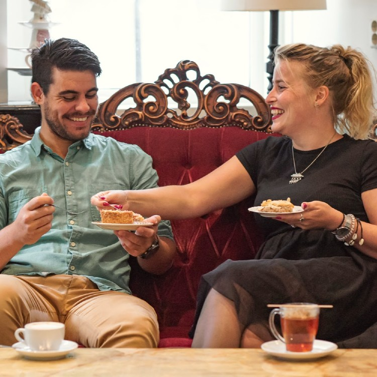
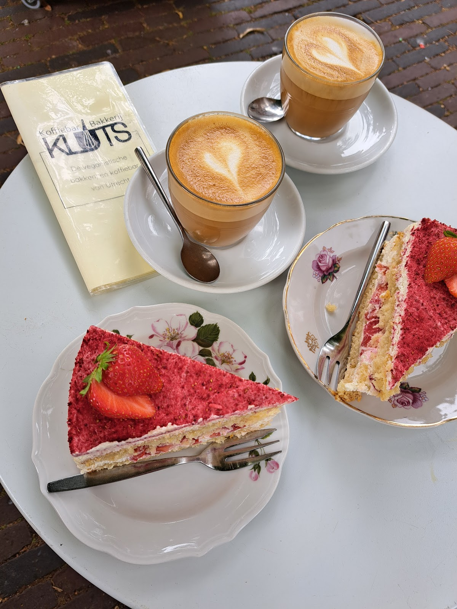
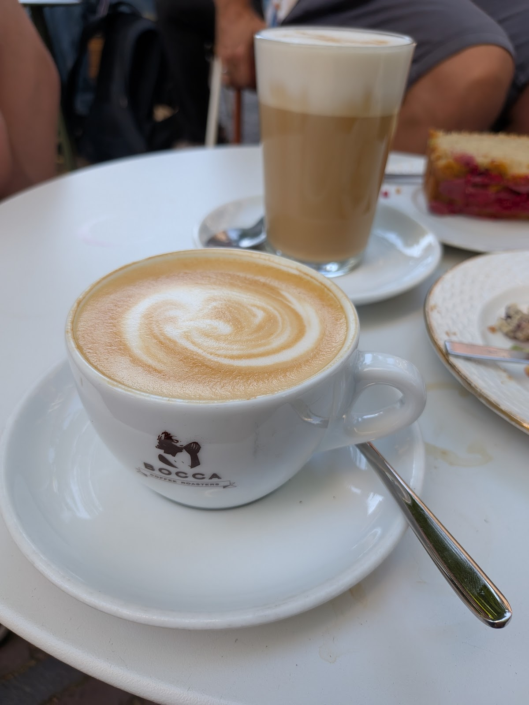
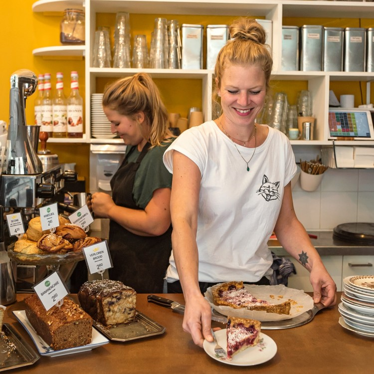
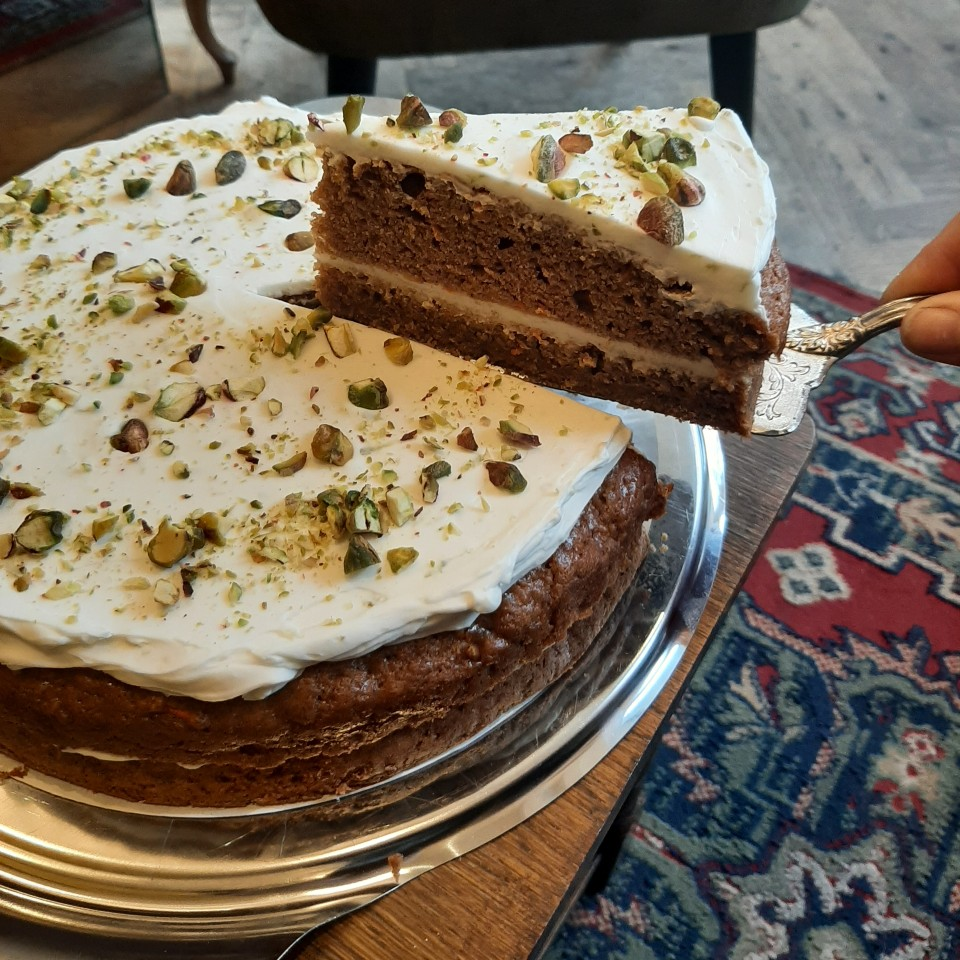
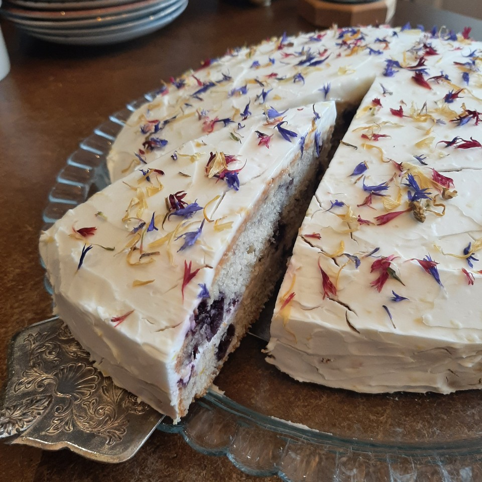
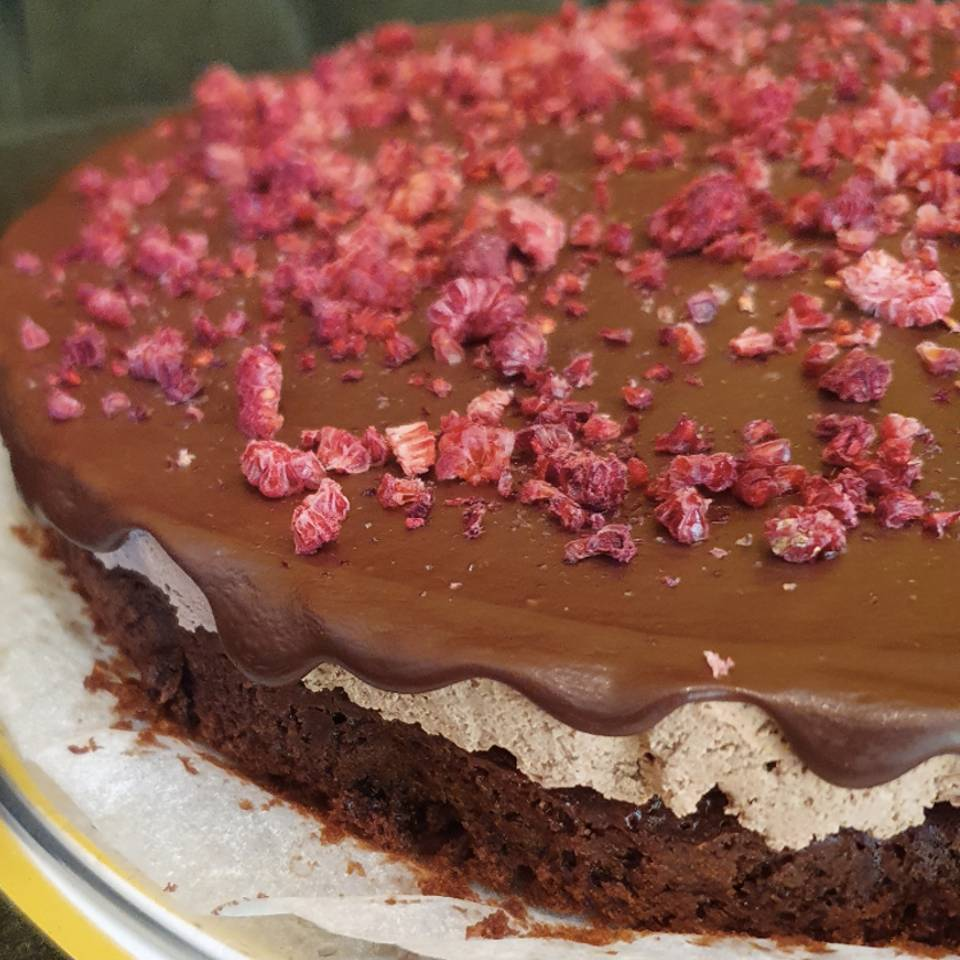
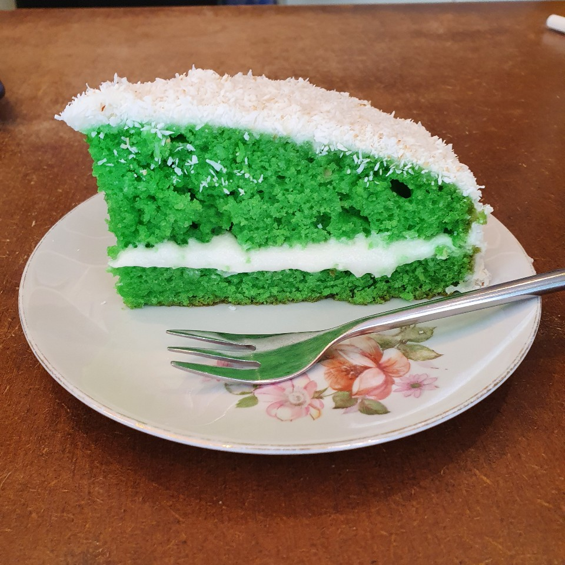
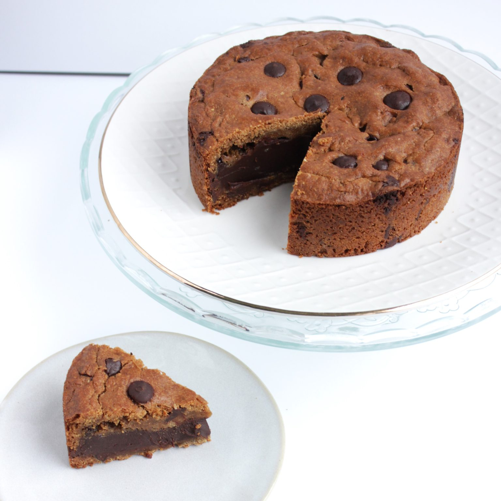
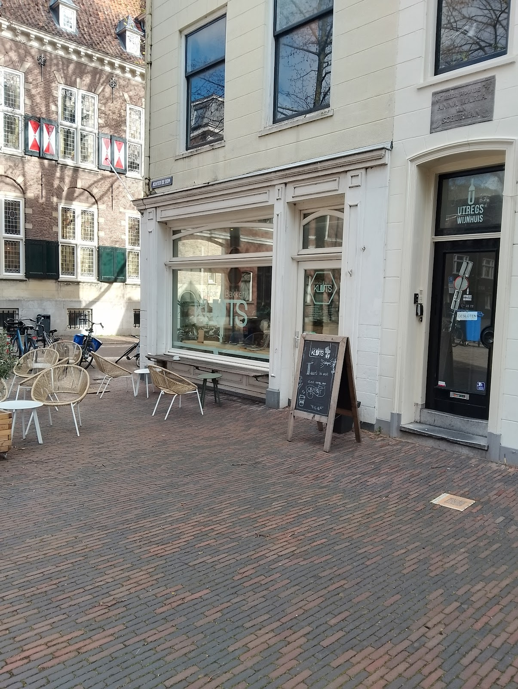

Neerploffen
Binnen op de bank, of buiten op het terras met uitzicht op de Domkerk. Ook op warme dagen is het daar 's ochtends nog lekker koel.
Vegan bakkerij & koffiebar, Utrecht
Elke dag vers gebak uit onze eigen bakkerij achterin en koffie van Bocca. Alles vegan en gebakken met spelt. Neerploffen op het terras, of lekker mee naar huis.
4,6 uit 676 Google-reviews

Wat we bakken laat je zien en proeven dat dierlijke producten echt niet nodig zijn. Een puntje ouderwetse appelkruimeltaart, of juist iets wat je nog niet kent, zoals onze pandan-kokostaart.

Binnen op de bank, of buiten op het terras met uitzicht op de Domkerk. Ook op warme dagen is het daar 's ochtends nog lekker koel.
Een goede kop koffie van Bocca met iets lekkers ernaast. Alles is vegan, dus van nature lactose- en eivrij, en we bakken met spelt.


Loop gewoon binnen en zoek iets uit voor thuis. Een hele taart of cake nodig? Die bakken we voor je op bestelling.
Bekijk de taartenAlle taarten zijn volledig vegan en gebakken met spelt. Een taart heeft 10 tot 14 punten, een cake zo'n 10 plakken. Je krijgt hem ongesneden mee.

Allergenen: gluten, soja, pistache

Allergenen: gluten, soja

€ 39
Allergenen: soja

€ 39
Allergenen: gluten, sojalecithine

€ 45
Zonder geraffineerde suiker, 24 cm, voor 10 tot 14 personen. Allergenen: cashewnoten, amandelen, sojalecithine. Kan sporen van gluten bevatten.
Gluten, walnoten, pecannoten
Gluten, soja, amandel, pistachenoten
Gluten, soja, amandel
Gluten, soja
De Cookie Pie maken we met onze eigen glutenvrije bloemmix. Onze bakkerij verwerkt wel gluten, dus sporen door kruisbesmetting zijn mogelijk.
Iets anders gezien op Instagram? Dat kan vaak in overleg.
Mijn weg naar KLUTS was niet gepland. Hij ontstond uit liefde voor dieren, voor eten en voor de helende kracht van iets maken. Ik verhuisde van Brazilië naar Nederland, werd veganist en werkte als food engineer. Toen kreeg ik in 2022 Long COVID.
Tijdens een langzaam herstel werd bakken mijn weg terug naar plezier. Zo begon Inclusive Bites, een online vegan bakkerij. Toen ik droomde van een echte plek, kreeg ik onverwacht de kans om KLUTS over te nemen. Ik zei meteen ja.
Sinds 1 januari 2026 schrijven we een nieuw hoofdstuk: volledig vegan, nog inclusiever, met onder andere glutenvrije opties. Een plek waar iedereen zich welkom voelt.
Fijn dat je hier bent.

4,6 uit 676 Google-reviews
"De Beste Vegan Taartjes van Utrecht! Ik herhaal: de beste vegan taartjes! Wanneer je iets te vieren hebt, hier moet je zijn. Favoriet is de maanzaad-citroencake, de framboos-chocoladetaart en de citroen-bosbessentaart. En een hartje voor het personeel."
"Rond 16:25 binnengekomen met de vraag of het okay is om een koffietje en een stukje cake te eten. Leuke sfeer, vriendelijk personeel en echt heerlijke pistachecake en goede koffie gehad. Blij dat ik hier even heb kunnen zitten."
"Lekkere koffie, veel keuze uit vegan gebak, gezellig en vriendelijke medewerkers. Update 24-06: In de ochtend is het ook op dagen zoals deze nog lekker koel op het terras"
Ook op zondag. Je vindt ons midden in het centrum, achter de Dom.
Achter de Dom 6
3512 JP Utrecht
Maandag tot en met zondag
10.00 tot 17.00